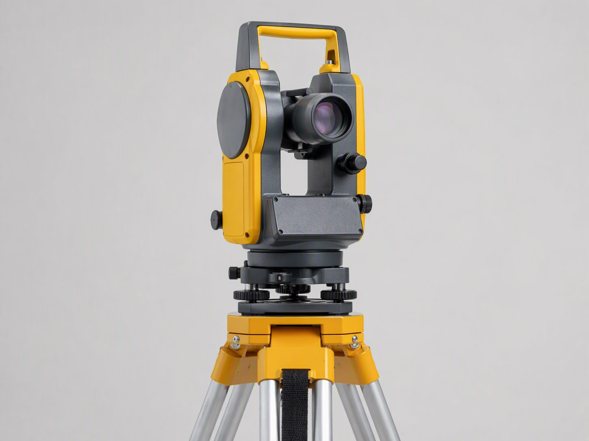
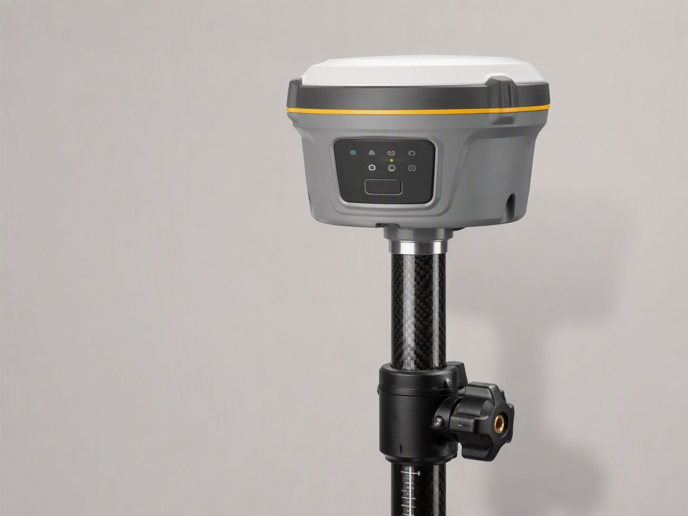
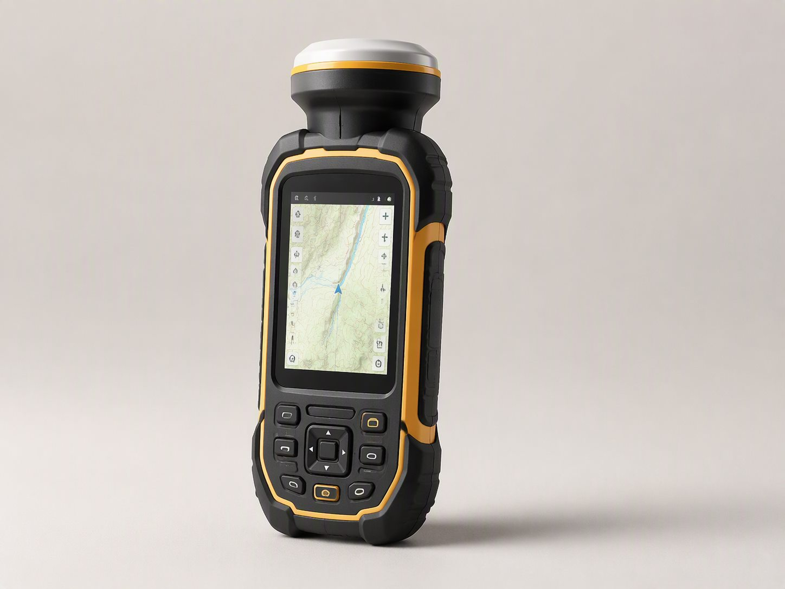
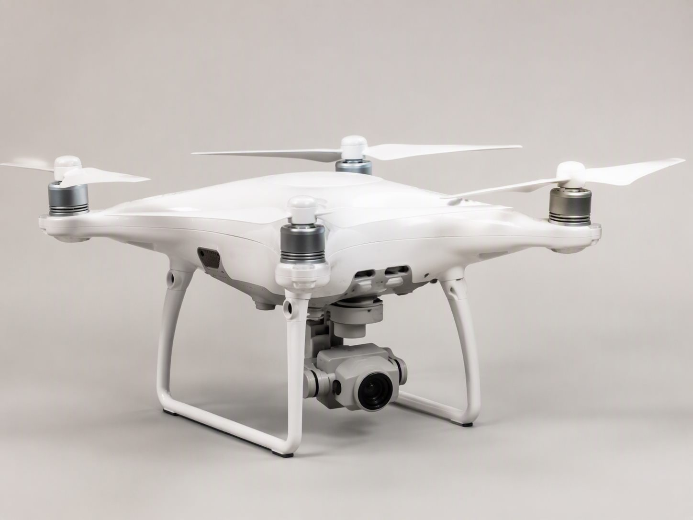
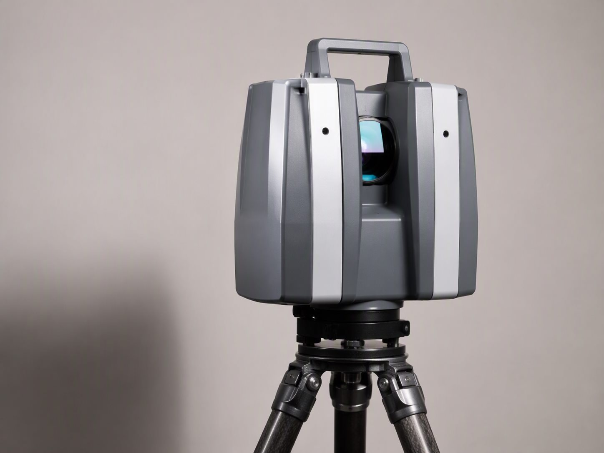
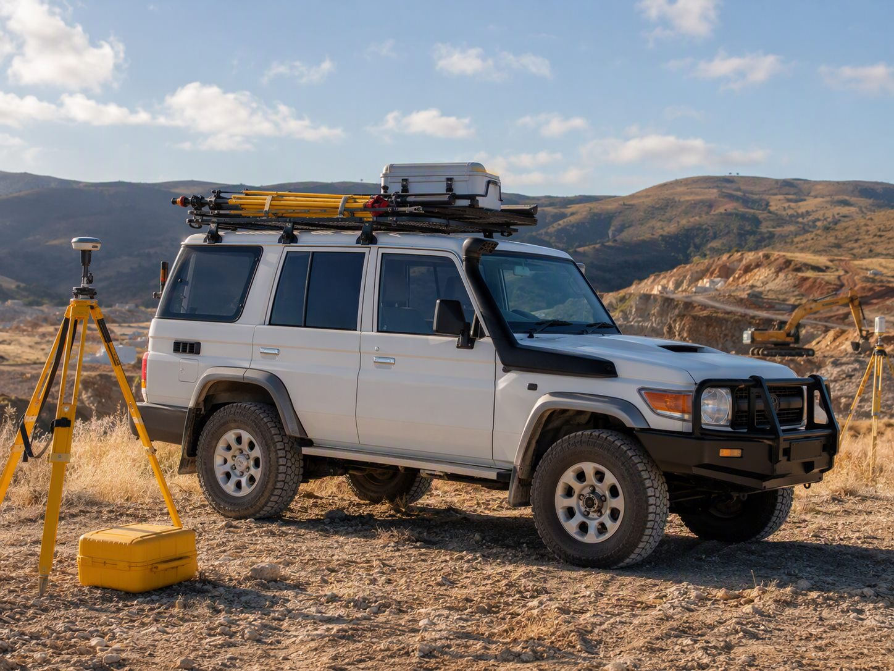
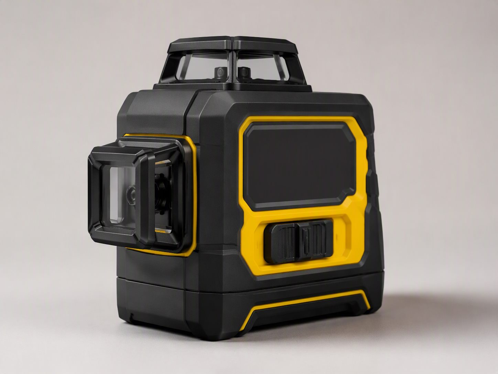
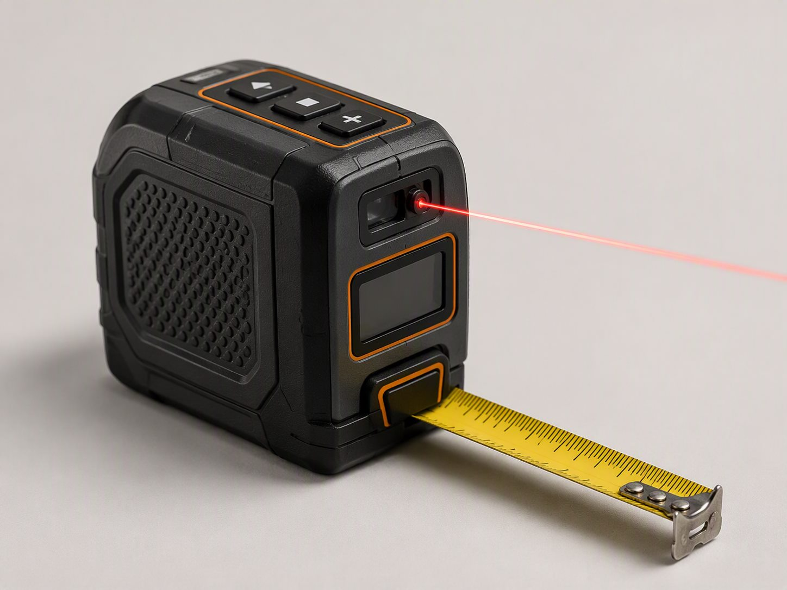
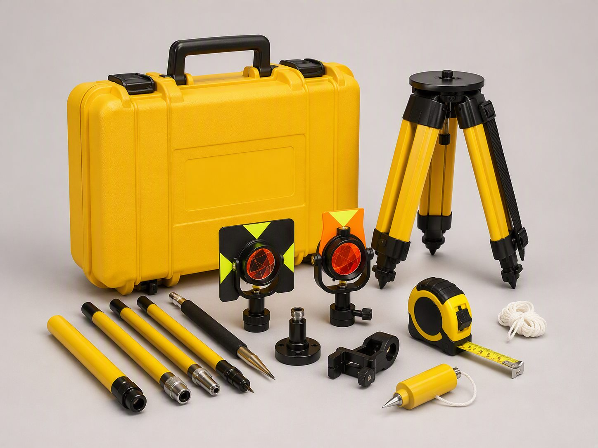

01 / FIELD
توتال استیشن
برای برداشتهای دقیق و کنترل هندسی پروژه.
از برداشت دقیق در میدان تا پردازش و ارائه داده، تجهیزات مناسب بخشی از کیفیت اجرای هر پروژه است.
مشاهده تجهیزات ←


مجموعه تجهیزات تدبیر نیروی آتی از ابزارهای برداشت میدانی تا امکانات پردازش و پشتیبانی، یک زنجیرهی کامل برای اجرای پروژههای دقیق میسازد.

پهپاد فانتوم ۴
لیزر اسکنر سهبعدی
خودروی عملیاتیمجموعهای از ابزارهای برداشت، موقعیتیابی، کنترل و پشتیبانی که در پروژههای مختلف شرکت به کار گرفته میشوند.
برای برداشتهای دقیق و کنترل هندسی پروژه.
ثبت موقعیت و دادههای مکانی با دقت بالا.
ابزار سبک و کاربردی برای برداشتهای میدانی.

کنترل تراز و همراستایی در عملیات اجرایی.

اندازهگیری سریع فاصله در برداشتهای روزمره.

تجهیزات تکمیلی برای آمادهسازی و اجرای کار.
برای برداشتهای موقعیتی در مسیر و کارگاه.
کنترل اختلاف ارتفاع و تراز در محل پروژه.
ثبت تصاویر و اطلاعات هوایی برای برداشت.
حضور سریع و آماده در مسیرهای پروژه.
پشتیبانی از تیمهای اجرایی در مسیرهای دشوار.
چاپ نقشهها و خروجیهای بزرگمقیاس پروژه.
آمادهسازی سریع اسناد و گزارشهای فنی.
پردازش، کنترل و ساماندهی اطلاعات پروژه.
ارتباط سریع و هماهنگی تیم در محل پروژه.
انتخاب ابزار مناسب، بخشی از دقت و نظم اجرای پروژه است.